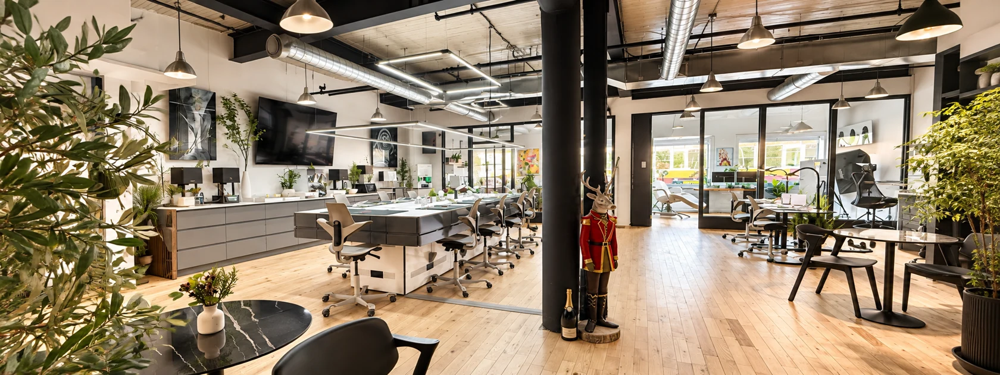
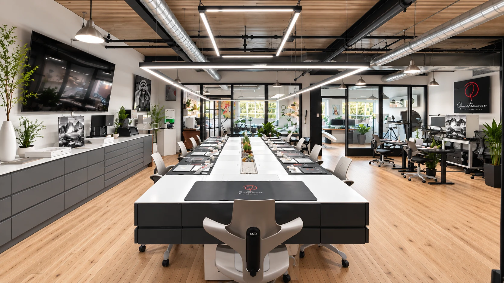
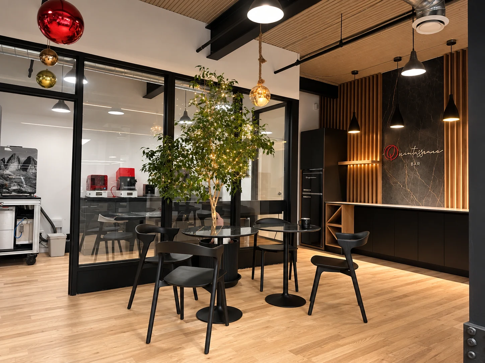
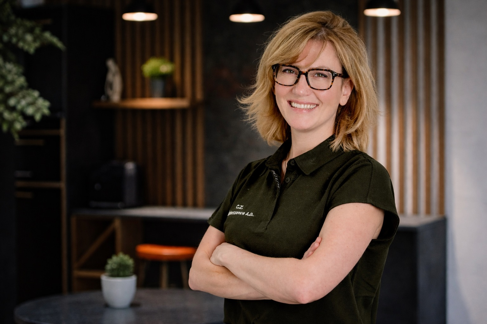
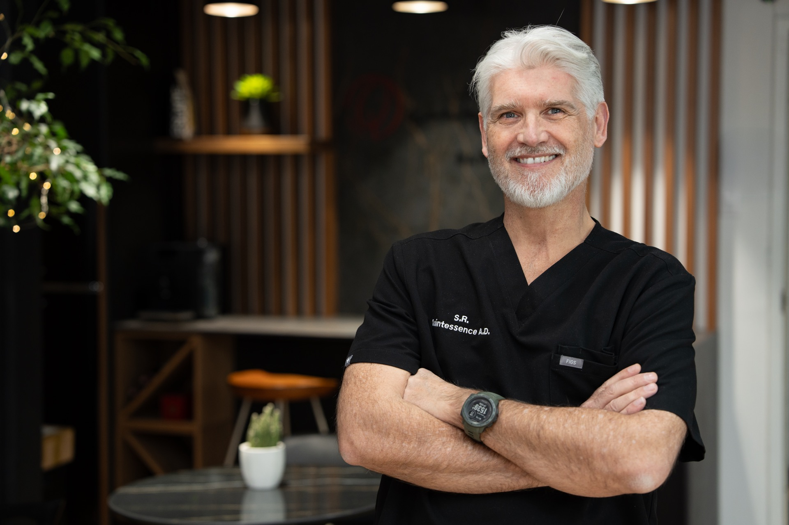

01.
Un lieu d’exception
Un espace ouvert, lumineux et fluide pour favoriser la collaboration et l’inspiration.

Derrière chaque restauration se trouve un environnement pensé pour la précision, la collaboration et l’innovation.
Notre atelier réunit expertise humaine, technologies avancées et culture du détail afin de donner vie à des restaurations fidèles à la nature.
Un espace ouvert, lumineux et fluide pour favoriser la collaboration et l’inspiration.

Chaque détail est pensé pour offrir les meilleures conditions de création.

Un environnement raffiné où design, technologie et savoir-faire se rencontrent au quotidien.
Quintessence Atelier Dentaire est née de la volonté de réunir l'art dentaire, la technologie et l'accompagnement humain au sein d'une même vision de l'excellence.
Chaque décision, chaque geste et chaque restauration traduisent notre engagement commun : conjuguer précision, esthétique et innovation pour créer des restaurations naturellement harmonieuses.


Deux expertises. Une même vision de l'excellence.
Découvrez les personnes qui donnent vie à chaque restauration.
Rencontrer l’équipe
Une collaboration fondée sur la confiance, la précision et le désir commun d’offrir le meilleur à chaque patient.